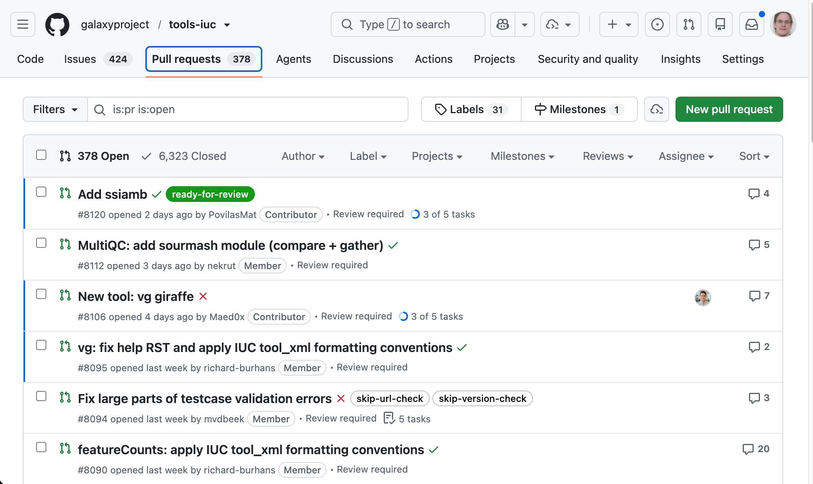
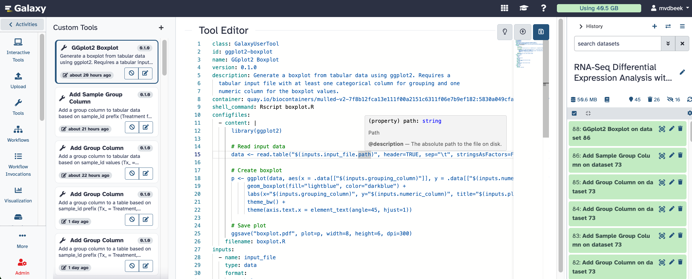
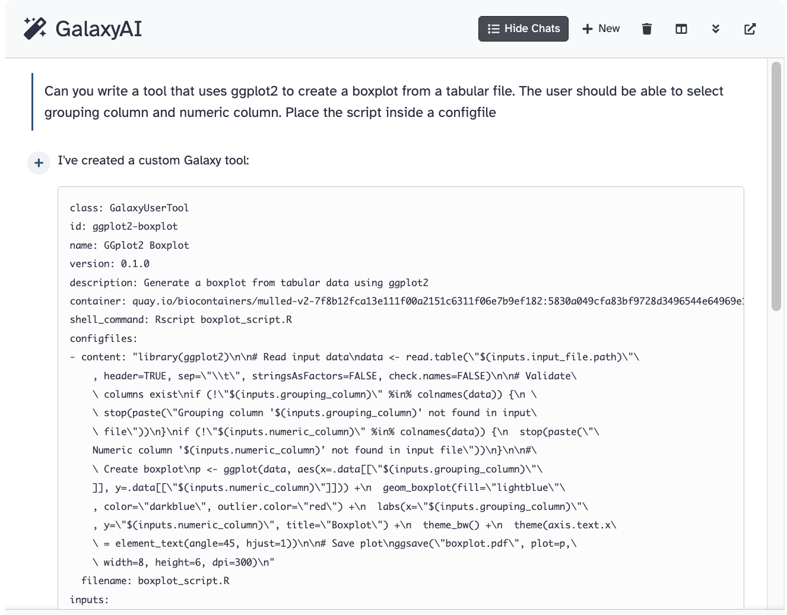

Galaxy Tools 2.0
Bring your own!
From throwaway LLM code → reproducible, validatable workflows
Marius van den Beek
PSU / SCI-SCALE
marius@galaxyproject.org
Why can’t users just install tools?
The catch — a tool is arbitrary code
1<command><![CDATA[2 #from pathlib import Path3 #user_id = $__app__.model.session().query($__app__.model.User.id).one()4 #open(f"{Path.home()}/a_file", "w").write("Hello!")5]]></command>…so every tool is hand-curated

Last year’s answer — User-Defined Tools
1class: GalaxyUserTool2name: Boxplot (ggplot2)3description: Boxplot from a tabular file4container: rocker/tidyverse5inputs:6 - {name: table, type: data, format: tabular}7 - {name: group_column, type: text}8 - {name: value_column, type: text}9shell_command: Rscript plot.R # the R script lives in a configfile10outputs:11 - {name: plot, type: data, format: png, from_work_dir: boxplot.png}…and the editor makes it safe and pleasant

Your LLM code, made reproducible
LLMs write great throwaway code
- Everyone is generating analysis code with an LLM
- …a pandas snippet, an R plot, a one-off filter
- But the output is ephemeral: a chat message, a copied cell
- hard to re-run, hard to share, impossible to reproduce six months later
- A User-Defined Tool is the natural package for it
- structured inputs · typed parameters · a pinned container
- → a throwaway snippet becomes a recomputable, workflow-embeddable component
So let’s not write it by hand

The agent writes it — typed, not trusted blindly
1class: GalaxyUserTool2name: Boxplot (ggplot2)3description: Boxplot from a tabular file4container: rocker/tidyverse5inputs:6 - {name: table, type: data, format: tabular}7 - {name: group_column, type: text}8 - {name: value_column, type: text}9shell_command: Rscript plot.R10configfiles:11 - name: plot.R12 content: |13 library(ggplot2)14 df <- read.delim("$(inputs.table.path)")15 ggplot(df, aes(`$(inputs.group_column)`, `$(inputs.value_column)`)) +16 geom_boxplot()17 ggsave("boxplot.png")18outputs:19 - {name: plot, type: data, format: png, from_work_dir: boxplot.png}From my tool to our tool
Sharing — what works today
User-defined tools are private to their creator. But they already travel:
- Embed one in a workflow — anyone who imports the workflow gets the tool created in their account
- Export to disk and load it like a regular tool — instance-wide availability when you want it
*Great for “me” and “my lab”. But there’s nothing between a private tool and a fully curated IUC toolshed tool.*
Proposal — a graduated promotion path
A tool should earn trust incrementally — without the full IUC toolshed overhead at every step:
- Personal — just you (create it)
- Shared — rides along in a workflow; passes static validation
- Reviewed — ≥1 peer review + at least one recorded test
- Annotated — description, ontology terms, license, citation
- Community — maintainer sign-off → a curated registry
Check the workflow before you run it
Validation in three layers — all run today, no runtime
- Static schema — generated JSON Schema
- every input/output type-checks; outputs line up with the inputs they feed
- Pydantic validators — the params *are* Pydantic models
- value & cross-field rules (a cutoff in range;
group_column≠value_column); wiring across the workflow
- value & cross-field rules (a cutoff in range;
- Linter — lives in
galaxy-tool-util- the *same* engine that already powers the editor’s errors — annotations, deprecations, missing tests
Proposal — expose it through planemo
Inputs and outputs are formally typed, so a workflow of UDTs is a portable artifact you can validate anywhere — in a repo, in CI, with no Galaxy server:
1$ planemo validate workflow.gxwf.yml2✗ filter step: 'value_column' references a column not produced upstream3✗ boxplot step: 'group_column' equals 'value_column' (model validator)4⚠ boxplot step: tool has no test case (lint)5 6# …fix…7 8$ planemo validate workflow.gxwf.yml9✓ schema · ✓ validators · ✓ lint — valid, no Galaxy runtime requiredComing to a server near you soon!
1class: GalaxyUserTool2name: Thank You!3description: Bring your own gratitude4container: busybox5shell_command: |6 echo "An LLM writes it → the editor types it → the community7 promotes it → planemo verifies it. Bring your own tool!" > thanks.txt8outputs:9 - {name: output1, type: data, from_work_dir: thanks.txt}With gratitude 💜